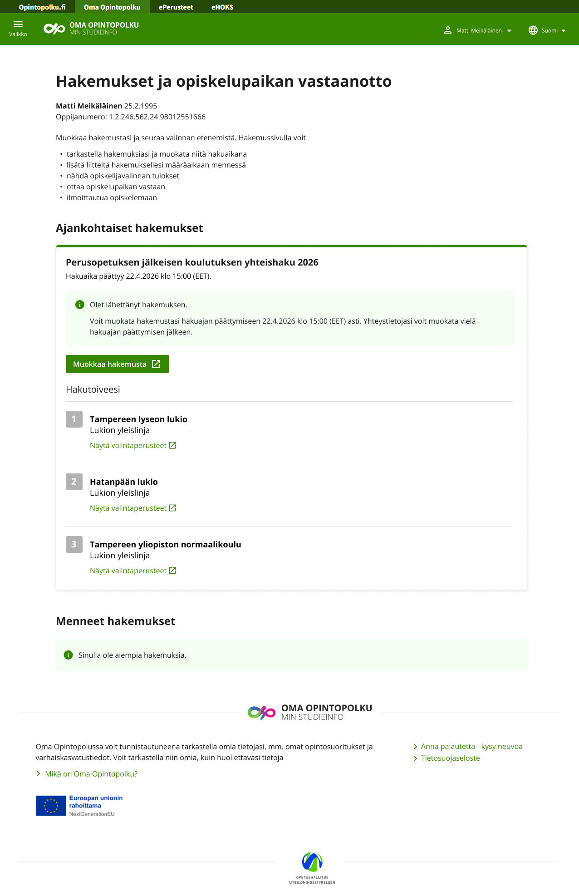
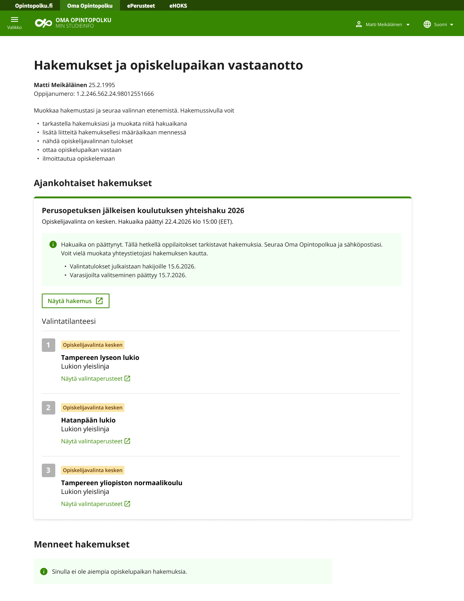
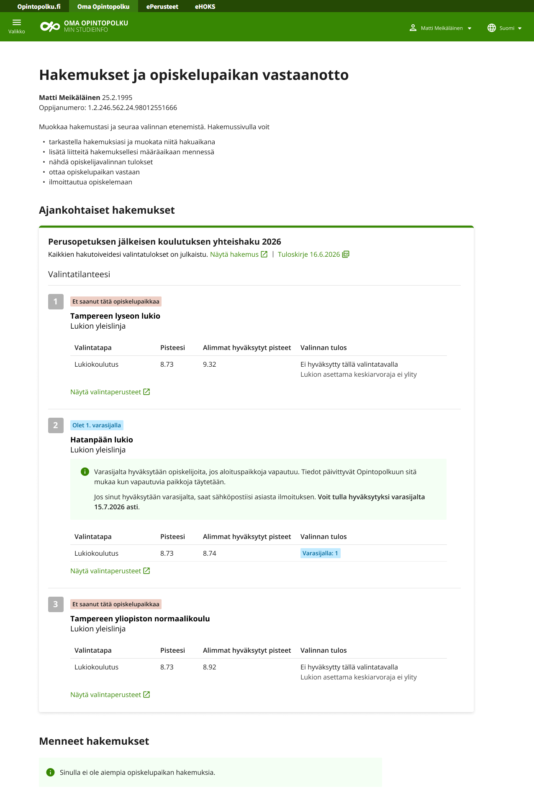
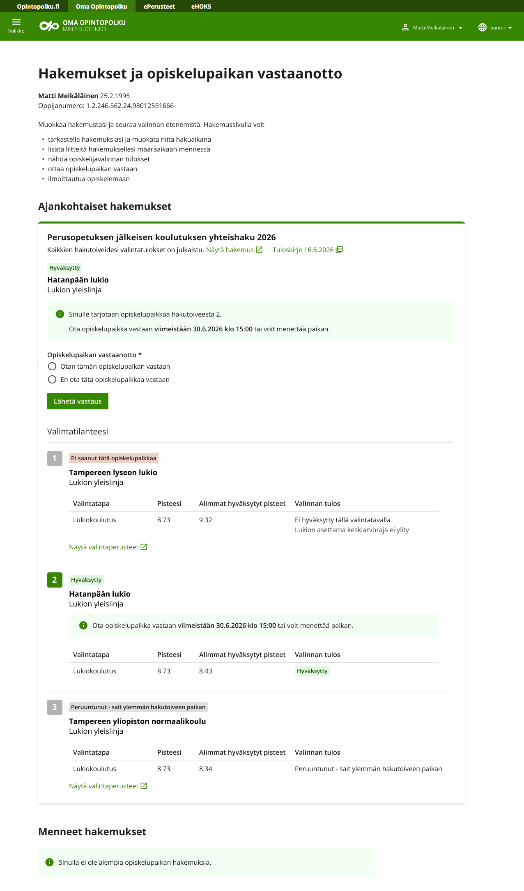
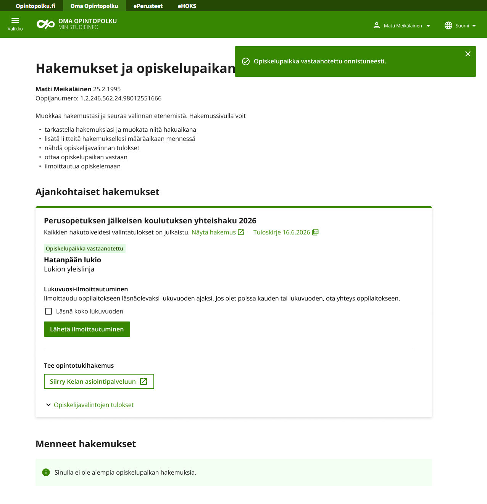
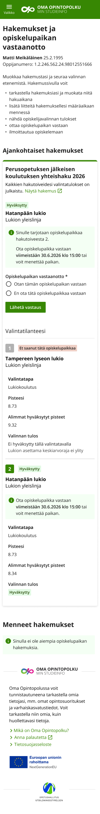

Sujuvampi opiskelupaikan vastaanotto ja moniteemaisen design-systeemin kehitys
Oma opintopolku-palvelu
Oma opintopolku on osa Opetushallituksen opintopolku.fi-kokonaisuutta.
- Opiskelupaikan hakeminen ja vastaanotto on tärkeä asia, sillä se liittyy joka vuosi yli 300 000 hakijan elämään.
- Isoimmat kävijäryntäykset tulevat korkeakoulujen ja 2. asteen kevään yhteishausta.
- Prosessi alkaa opiskelupaikan hausta ja huipentuu tässä palvelussa paikan vastaanottoon sekä oppilaitokseen ilmoittautumiseen.
Haaste
Yksi palvelu, monta rinnakkaista logiikkaa. Oma opintopolku kokoaa samaan asiointipalveluun korkeakoulujen yhteishaut, 2. asteen yhteishaun, erillishaut ja jatkuvat haut
- Osassa hakuja hakutoiveet laitetaan mieluisuusjärjestykseen ja osassa ei.
- Varasijojen ja ehdollisen opiskelupaikan myötä hakijan eri hakutoiveet voivat olla useassa eri tilassa samanaikaisesti.
- Yhden opiskelupaikan sääntö vaikuttaa myös muihin hakuihin ja opiskelupaikkoihin.
- Kevään ja syksyn yhteishauilla on tarkat, valtakunnalliset aikataulut, mutta erillishaut ja jatkuvat haut ovat ympäri vuoden liikkuvia ja korkeakoulukohtaisia.
Yhdessä nämä muodostavat jopa hieman monimutkaisen sääntöjärjestelmän. Erityisena haasteena oli tukea kaikkia hakutapoja sekä niiden erilaisia käsittelysääntöjä, siten että hakijat ymmärtävät ne. Vanhassa palvelussa tätä seikkaa ei oltu huomioitu riittävällä tavalla.
Positiivisen lisähaasteen toi uuden kehitteillä olevan moniteemaisen design-systeemin (virkailijan teema ja julkisen puolen teema) soveltaminen ensimmäistä kertaa organisaation julkisessa verkkopalvelussa.
Ratkaisu ja lähestymistapani
Nykypalvelun ongelmakohtien tunnistaminen. Yhtenäinen mutta paremmin hakijakohtaista tilannetta heijastava käyttöliittymä hakukäytäntöjen mukaan.
- Opiskelupaikan hakijoilta kerätyn ison palautemäärän luokittelu ja käsittely: eniten toistuvien ja oleellisten palautteiden tunnistaminen.
- Käytettävyysarviointi uudistettavalle palvelulle.
- Uuden käyttöliittymän suunnittelu ja kehittäminen käytettävyysarvioinnin ja palauteanalyysin pohjalta.
- Osana käyttöliittymiä sisällön tarkka hakukohtainen ja tilannelähtöisempi suunnittelu tukemaan palvelun moninaista logiikkaa
- Visuaalinen suunnittelu Opetushallitukselle suunnittelemani design-systeemin pohjalta.
- Design-systeemin kehitys eteenpäin projektin tarkennusten pohjalta ja hyödyntäminen seuraavissa projekteissa.
- Käytettävyystestit 2. asteen ja korkeakoulujen hakijoille. Testilöydösten tulkinta ja uudet kehitysideat.
Lopputulos

Nykyaikainen viranomaispalvelu
Teknisesti nykyaikaiset ja toimivat opiskelupaikan vastaanoton palvelut, jotka tarjoavat hakijoille miellyttävän palvelukokemuksen ja myös säästävät virkailijoiden työaikaa

Tilannelähtöinen ja ohjaava
Palvelu huomioi käyttäjien tarpeet ja on ohjaava, tilannelähtöinen ja henkilökohtainen.
Yhtenäinen uusi organisaation brändäys, toimivuus ja käytettävyys huolella suunnitellun design-systeemin myötä.
Työnäytteitä
Hakuaika käynnissä

Hakuaika päättynyt

Varasijalla oppilaitokseen

Hyväksytty oppilaitokseen

Opiskelupaikka vastaanotettu

Mobiilitaitto

← Portfolioon